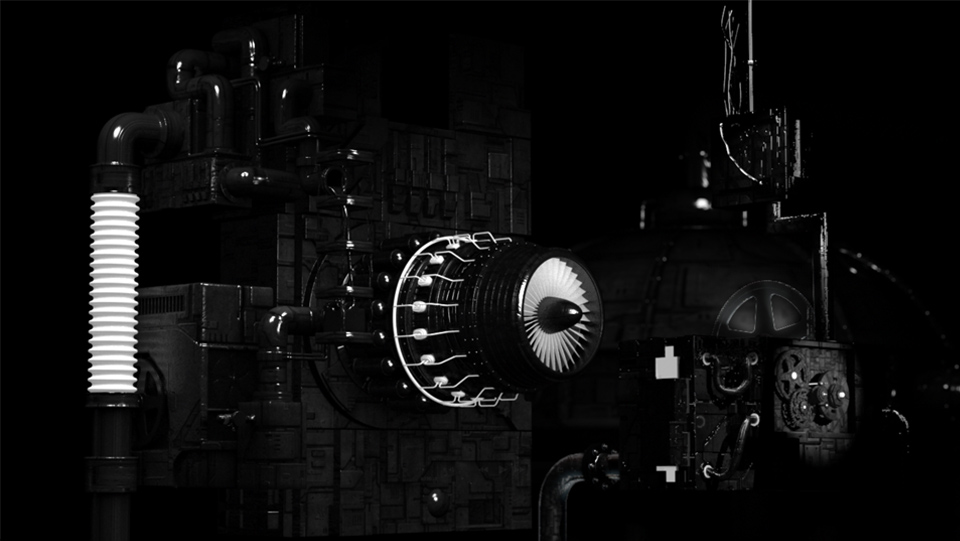
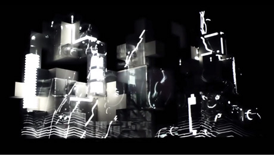
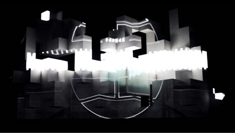
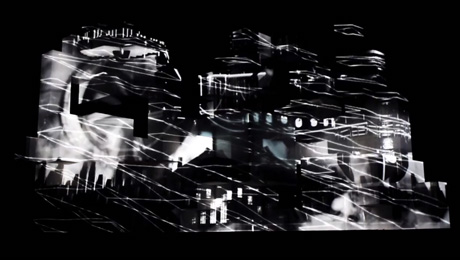
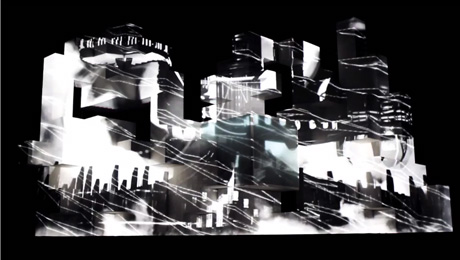

Amon Tobin
This was the first project I worked on at Leviathan. I was an animator for the song "Piece of Paper". The majority of the work involved smoke effects and lights flickering, as well as a few other goodies that really made this a crowd favorite.

A short that documents the design process.




Credits
- Aaron Edwards/Gareth Fewel/Derek Weglarz Design Team
- Sam Gierasimczuk/Bradon Webb Creative Directors
- Jason White Executive Creative Director
- Adam Berg/Bryant Place, V Squared Labs/Peter Sistrom, V Squared Labs Programmers
- Matt Daly/Alex Lazarus Technology Directors
- Daniel Ryan/Vello Virkhaus, V Squared Labs Editors
- Ashley Hughes/Mathew Smith Photographers
- Chris Beers/Erik Jensen/Tim Sepulveda Visual Effects Artists
- Vello Virkhaus, V Squared Labs Director
- Dave Foss, V Squared Labs/Carlos Sa, V Squared Labs/Emilio Sa, V Squared Labs Animators
- David Brodeur/Blake Cartwright/Jody Evenson/Jimi Filipovski/Katrina Nelken/Dave Pasciuto/Dan Tiffany 3-D Animators
- Krissy Estrada Associate Producer
- Anastasia King Jaress, V Squared Labs/Brandy Olsen Producers
- Chad Hutson/Alex Lazarus Executive Producers
- Heather Shaw, Vita Motus Design Studio Production Designer/Structural Designer
- Jarret Smith Consultant
- Stefano Novelli Fabricator
- Leviathan (Chicago, IL)/V Squared Labs/Vita Motus Design Studio Project Design and Development
- Ninja Tune Records/Amon Tobin Clients